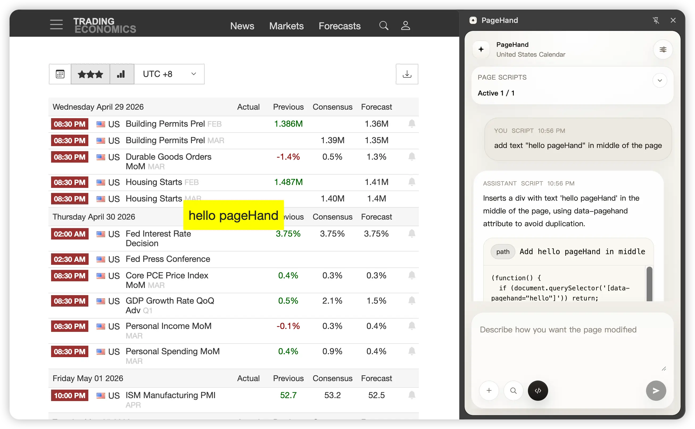
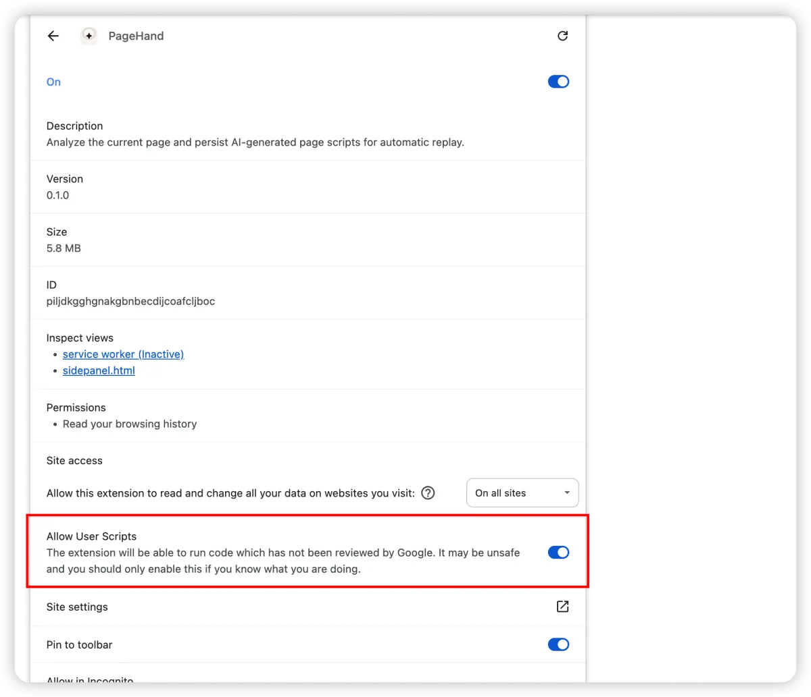

An AI side panel for injecting dynamic page scripts, reshaping any page on demand, and replaying those changes automatically.
Download Latest Release Free & open source · 4-step install
Why PageHand
PageHand goes one step further: read the page, generate a runnable script, execute it from chat, and persist it for automatic replay.
PageHand extracts the page structure, content, and interactive elements so the model knows exactly what's on screen.
Describe the change in natural language. The model generates a self-contained JavaScript snippet tailored to that page.
Review the generated code, choose a persistence scope (exact URL, path, or domain), and inject it into the page instantly.
The rule is saved locally and registered with chrome.userScripts. It runs automatically on revisit — even across SPA route changes.
Highlights
From natural language to persistent page automation in one flow.
Generate and execute page-modifying scripts without hand-writing code.
Reshape any page on demand — declutter, translate, highlight, or insert custom elements.
path, exact, or domainChoose the scope that matches your workflow — from a single URL to an entire site.
Layer multiple rules on the same page. Each runs independently in order.
Listens for route transitions in single-page applications and re-runs matching rules automatically.
Ask questions about what's on screen instead of starting from a blank LLM session.
Get extra context from DuckDuckGo when you need it, without cluttering every request.
See which scripts apply to the current page and enable or disable them instantly.
Save your most-used prompts for quick reuse — clean layout, translate, highlight, and more.
Matches your system preference or lets you choose manually.
How It Works
PageHand orchestrates a tight loop between the browser, the model, and your page.
Core Capabilities
Each capability builds on the one before it — from simple Q&A to persistent page automation.
PageHand answers with awareness of the active tab. Ask about what's on screen, extract key information, or analyze the page structure.
Enable script mode to modify the page instead of only answering. The model returns a runnable script with a summary and execution controls.
After execution, scripts are stored locally and registered with chrome.userScripts. They replay automatically on revisit.
For single-page applications, PageHand listens for route transitions and re-runs matching rules when the URL changes.
The side panel shows whether the current page has matching scripts and lets you manage them on the spot.
Product Principles
Every decision in PageHand is guided by these principles.
The side panel should feel like a normal assistant — not a developer console.
Search and script mode are simple toggles next to send. No modal dialogs, no complex setup.
Generated scripts are for self-use and repeated workflows. You own the rules you create.
Settings and rules live in browser storage. No account, no cloud sync, no telemetry.
Generate, execute, refine, and keep the result. The feedback loop is seconds, not minutes.
Installation
PageHand is a Chrome extension sideloaded from the latest release. No store listing required.
Download the pagehand-*-chrome.zip asset from the latest release on GitHub.
Unzip to any folder on your machine that you can keep in place.
Open chrome://extensions, enable Developer Mode, and click Load unpacked. Select the extracted folder.
In the extension details page, toggle Allow User Scripts on. This is required for persistent script replay.

Quick Start
Once loaded, getting started takes seconds.
Any http, https, or file page works.
Click the PageHand toolbar icon or navigate to the side panel via Chrome's side panel menu.
Open Settings and enter your API key, base URL, and model name. Any OpenAI-compatible endpoint works.
Click a pre-built action like "Summarize this page" or type your own question. Turn on script mode to generate a page modification.
Choose a scope (path, exact, or domain), click execute, and revisit the page to confirm the script auto-runs.
Model Support
You are not locked to a specific provider. Point PageHand at any compatible API that supports chat completions.
DeepSeek is the default example, but any provider works.
Base URL: https://api.deepseek.com/v1
Model: deepseek-chat
API Key: sk-...POST /chat/completions endpointConfiguration
Every aspect of PageHand is configurable through the options page.
API key, base URL, model name, temperature, and max tokens. Test your connection before saving.
Default script scope (exact, path, or domain), search toggle, and theme mode (light, dark, auto).
Prompt library for reusable templates and site-specific instructions that apply automatically per hostname.
Development
PageHand is open source. Clone the repo and start hacking.
git clone https://github.com/lwxyfer/pagehand.git
cd pagehand
npm install
npm run dev# Type-check
npm run compile
# Production build
npm run build
# Distributable zip
npm run zipPermissions & Privacy
PageHand uses only the Chrome APIs it needs, and your data stays local.
Settings and script rules are stored exclusively in browser storage. Current page content is sent to the configured AI endpoint only when you explicitly ask for analysis or script generation. PageHand does not require a hosted backend to function.
Use Cases
Real workflows that benefit from persistent page scripting.
Clean cluttered articles and focus on the main content.
Add custom reading aids to documentation pages.
Highlight internal workflow steps on dashboards.
Insert summaries or action cards into repeated work pages.
Build lightweight augmentations for SaaS tools without userscripts.
Translate page content while preserving layout.
Limitations & Safety
PageHand is a powerful tool. Use it responsibly.
Chrome internal pages (chrome://) are not supported. Script side effects cannot always be reversed without reloading. Script quality depends on the target DOM and generated code. Currently Chromium-only.
Generated scripts are code and should be treated seriously. Avoid script generation on sensitive pages — banking, payment, identity, or production admin systems. Intended for self-use in controlled environments.